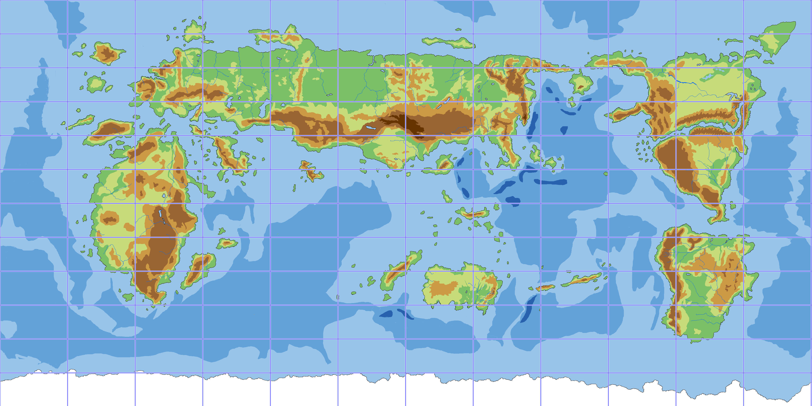
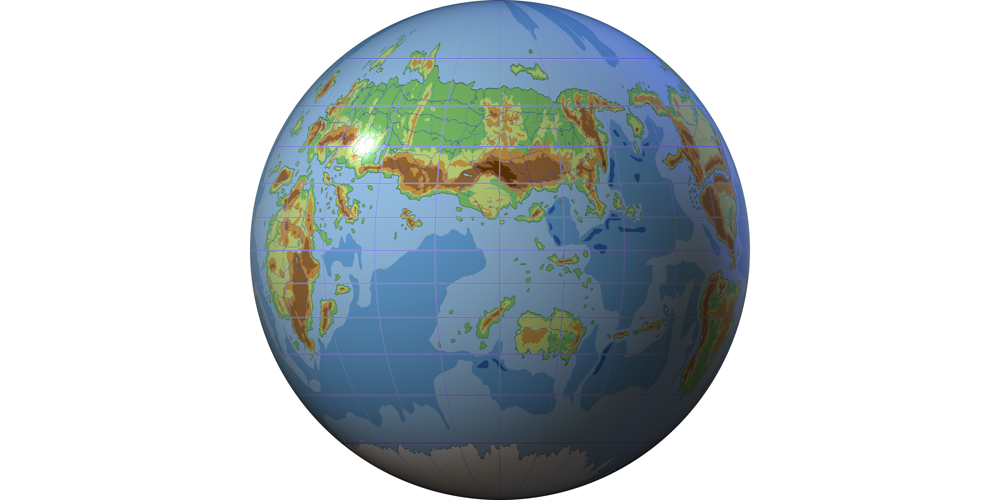

|
アトラスの風土

そういえばレインって惑星アトラスから来たのよね。
アトラスってどんなところ？

案外地球と変わらないよ。月も太陽もあるしね。
人間の生きられる環境って結構限られているんじゃないかな。
地球と全然違う環境だったら生身で住めないものね。
異世界っていってもあくまでリアルな造りなのね。

大陸も地球に似ているのよ。
アトラスの世界地図を見せてあげるね。
（クリックすると大きくなるよ）


ほんとだ、地球に似てる(；゜０゜)
でもやっぱり異世界は異世界だね。違う世界だってことはすぐ分かるよ。

でしょ(〃⌒ー⌒)
ただ、「どうしてこんなに地球に似てるのかな？」って思った人もいると思うの。
そんな読者さんは、番外編のファンタジー論を読んでみてくださいね。

ところでこの地図って日本で売ってるのに似てるね。全体的にпの字みたいな形をしてるでしょ。
ほら、アメリカが右翼でアフリカが左翼で、ユーラシアが天蓋になってるような形の。
どうしてこういう形なの？

真ん中の一番上に横長の島があるでしょ。ここから西が西洋で、東が東洋なの。
単に東西の分かれ目が国際地図の真ん中になっているだけよ。
ところで、レインとアリアの住んでるアルバザードはどこかな？

地図の左上のほうよ。
蛍光ペンでピンクに塗ってあげるね。


へぇ、私が『紫苑の書』の本編で訪れるのはここなのね。
こうして見ると急にイメージが湧くなぁ。地球でいうとフランス辺りかな。
けどさ、自分が住んでるところが地図の左端にあるって見づらくない？
それに、平面の地図だと本当の大陸の形は分からないよね。地球儀ってないの？

幻天儀のことね。こんな感じかしら。
クリックで拡大するわよ。
あと、こっちのページには色んな図法の地図も置いてあるわよ。

わぁ、球体で見ると本格的だね！
リンク先のページは地図がいっぱいだわ。ウチの学校の地理の授業みたい(^ω^; 頭が混乱するよorz
アルバザードの上にあるfiiliaっていうイギリスみたいな島国は、球体だとずいぶん細長いみたい。

そうね、こういう実体って3Dじゃないと分からないわよね。

あぁ、これ見てたら今度の休みにまたアトラスに行きたくなっちゃった！

ふふ、いつでも来てね。
|